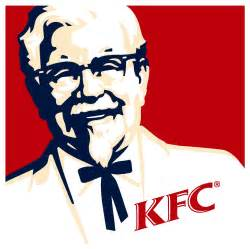

| Sivanesalingam Mickael | Celibataire |
| 93 villetaneuse | Permis B |
| 060000000 | |
| sivanes.mickael@mail.com |
| 2016 - 2018 | Master 3IR ( Ingenierie et Innovation en Images et Reseau - Université Paris 13 |
| 2014 - 2016 | L3 SPI (Sciences Pour l'Ingenieur) - Université Paris 13 |
| 2013 - 2014 | L3 INFORMATIQUE (parcours: MIME) - Universitité Paris 8 |
| 2011 - 2013 | DUT GEII (Genie Electrique et Informatique Industrielle) - IUT de Lieusaint |
| 2011 | BAC STI mention : assez bien |
| Programmation | java , java ee , c , html , css , php |
| logiciels | Eclipse , Mysql , visual studio , wamp / php admin |
| Reseau | Routeur cisco , IPV4 ,IPV6 , TCP/IP |
| Langues | Français Anglais |
| 2014 | Employé polyvalent KFC - 77340 Pontault-Combault  |
| Juillet 2013 - Aout 2013 | Stage fin d'etude DUT GEII chez Pro Electricité- 95120 ERMONT |
| Sport | tir a l'arc , football |
| Culture | cinema , serie televisée , Jeux video |
| Voyage | Chine , Espagne , Angleterre , Allemagne |